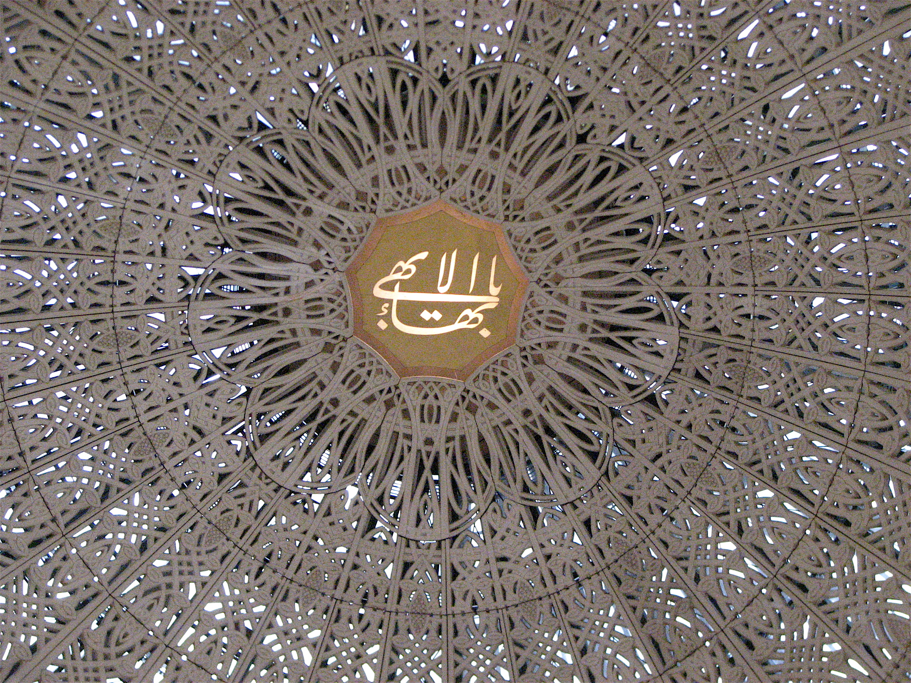
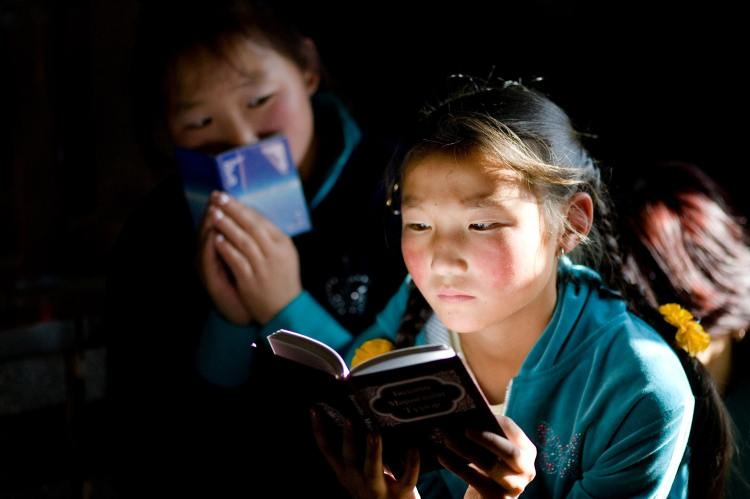
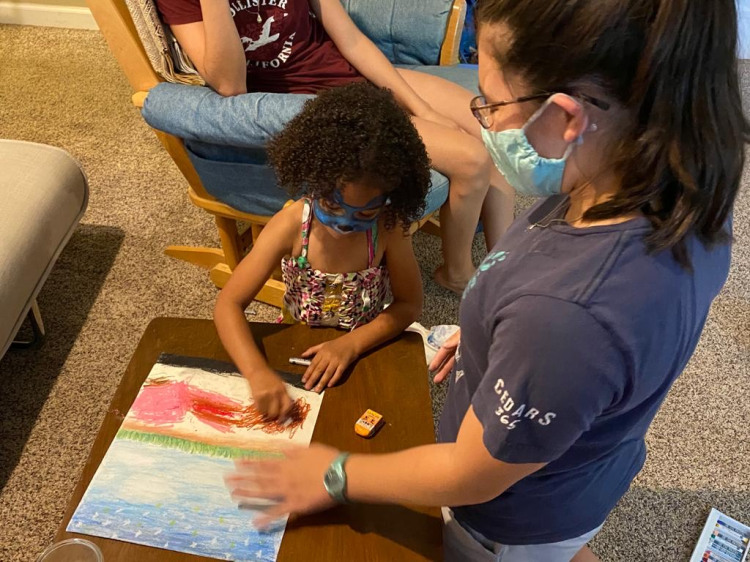
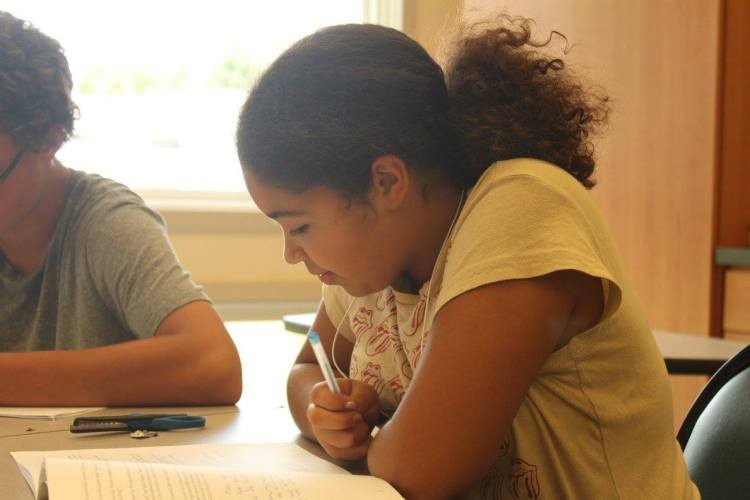
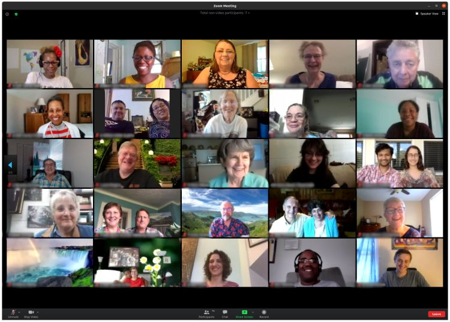

Our Vision
Throughout history, God has sent to humanity a series of divine Educators—known as Manifestations of God—whose teachings have provided the basis for the advancement of civilization. These Manifestations have included Abraham, Krishna, Zoroaster, Moses, Buddha, Jesus, and Muhammad. Bahá’u’lláh, the latest of these Messengers, explained that the religions of the world come from the same Source and are in essence successive chapters of one religion from God.
Bahá’ís believe the crucial need facing humanity is to find a unifying vision of the future of society and of the nature and purpose of life. Such a vision unfolds in the writings of Bahá’u’lláh.
How do Baha'is experience collective worship?
How is the vision of world unity expressed at a local level?
How can Baha'i Youth be champions of justice?
How can people work for Race Unity?

What Bahá’ís Believe
In thousands upon thousands of locations around the world, the teachings of the Bahá’í Faith inspire individuals and communities as they work to improve their own lives and contribute to the advancement of civilization. Bahá’í beliefs address such essential themes as the oneness of God and religion, the oneness of humanity and freedom from prejudice, the inherent nobility of the human being, the progressive revelation of religious truth, the development of spiritual qualities, the integration of worship and service, the fundamental equality of the sexes, the harmony between religion and science, the centrality of justice to all human endeavours, the importance of education, and the dynamics of the relationships that are to bind together individuals, communities, and institutions as humanity advances towards its collective maturity.[2]

What Bahá’ís Do
Since the inception of the Bahá’í Faith in the Nineteenth Century, a growing number of people have found in the teachings of Bahá’u’lláh a compelling vision of a better world. Many have drawn insights from these teachings—for example, on the oneness of humanity, on the equality of women and men, on the elimination of prejudice, on the harmony of science and religion—and have sought to apply Bahá’í principles to their lives and work. Others have gone further and have decided to join the Bahá’í community and participate in its efforts to contribute directly to the realization of Bahá’u’lláh’s stupendous vision for humanity’s coming of age.
Bahá’ís hail from all walks of life. Young and old, men and women alike, they live alongside others in every land and belong to every nation. They share a common goal of serving humanity and refining their inner-lives in accordance with the teachings of Bahá’u’lláh. The community to which they belong is one of learning and action, free from any sense of superiority or claim to exclusive understanding of truth. It is a community that strives to cultivate hope for the future of humanity, to foster purposeful effort, and to celebrate the endeavours of all those in the world who work to promote unity and alleviate human suffering.[3]
Involvement in the Life of Society
Bahá’u’lláh counselled His followers: “Be anxiously concerned with the needs of the age ye live in, and centre your deliberations on its exigencies and requirements.”
As such, Bahá’ís throughout the world—both individually and collectively—strive to become involved in the life of society, working shoulder to shoulder with divers groups to contribute to the advancement of material and spiritual civilization.
Building Community
Throughout the world those inspired by Baha’u’llah’s vision for a new world, are engaged in service to humanity. They arrange activities and programs to build vibrant communities that are spiritually and materially prosperous. Raising such communities will require a tremendous increase in the capacity and maturity of the individuals, the institutions and the communities who will be its builders. At present, in Baha’i communities throughout the region, such capacities are being fostered through activities and programs that revolve around the axis of worship and service.
Through sharing insights from the Baha’i teachings with others, creating spaces for collective worship, empowering young people, and assisting groups of friends to study the word of God and apply it for the betterment of the world, participants contribute to a process of community building in which acts of worship and efforts to promote the common good are woven together.
-

Enhancing the Devotional Character of the Community
-

Spiritual Education of Children
-

Spiritual Empowerment of Junior Youth
-

Study Circles for Personal and Community Transformation
Copyright © The Regional Bahá’í Council of the Midwestern States